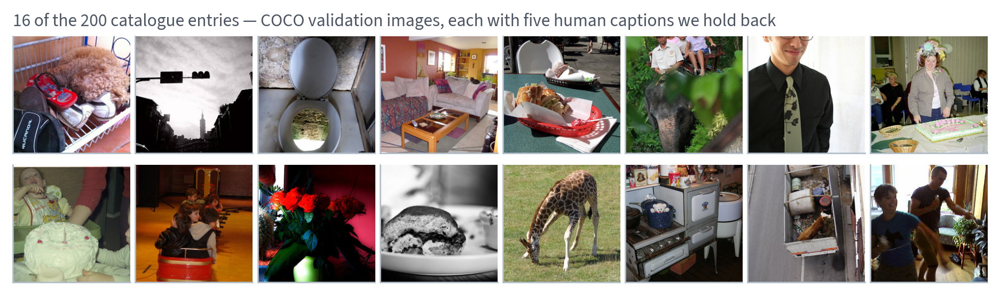
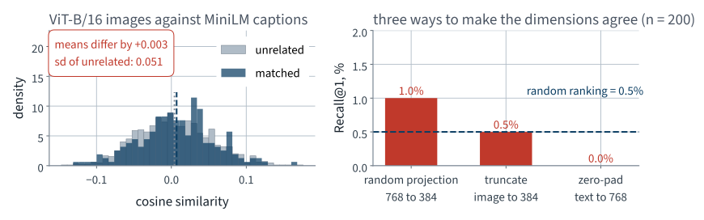
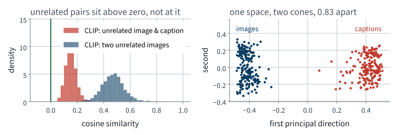
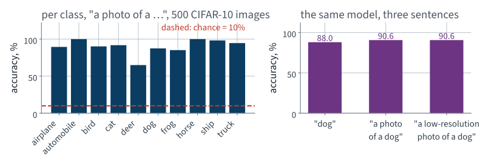
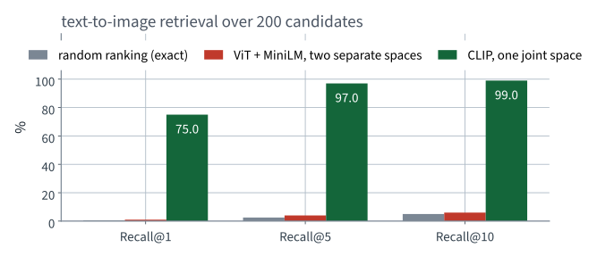
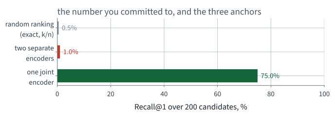

COCO
Lecture 23 Géron Ch. 15–16
Applications of Machine Learning
BSc Mathematics of Artificial Intelligence · Third year
Part V built retrieval over text and over user behaviour. Both reduced to the same object: two encoders and an inner product.
A retailer’s catalogue team. Their catalogue has one property that breaks every search system they have bought:
Customers type sentences. The catalogue stores pixels. Nothing in the system converts one into the other.
| Input | Output |
|---|---|
| A sentence typed by a customer | A ranked list of catalogue entries |
| “a red bus on a city street” | the entries whose picture shows that |
This is the first brief in the course whose input and output are not the same kind of object.
Keyword search needs text on both sides. So does the semantic search you built in the previous application: it embeds a sentence and compares it to other sentences.
Hold that thought. The next lecture counts how many entries it costs us, and repairs it.
200
catalogue entries
32.6 MB on disk
Say the candidate-set size every time you say a recall. A recall without it is not a measurement.
Measured on one run of this lecture’s notebook; hardware, library versions and random seeds can make a re-run differ slightly.

Ordinary photographs of ordinary things — and five sentences each, written by five different people, which the search system never sees.
| Caption | Role | Who sees it |
|---|---|---|
| #1 | the entry’s description, when it has one | the text index |
| #2 | the customer’s query | the search box |
| #3–5 | held back | nobody, today |
Using two different people’s sentences about the same picture makes this a paraphrase problem rather than a lookup. If we used the same sentence on both sides, a hash table would score 100%.
Test against a case whose answer you know. The catalogue has no labels, so it cannot play that role.
| Corpus | Size | Job |
|---|---|---|
| COCO catalogue | 200 images | the real task: rank entries for a query |
| CIFAR-10 test | 500 images | the known-answer check: ten labels we have |
CIFAR-10 is 32×32. That is a hard setting for any model trained on web photographs, and we will see the cost.
A transformer takes a sequence. An image is a grid. So cut it up:
A 224×224 image at 16×16 patches is $14 \times 14 = 196$ tokens. Well within reach of the quadratic cost, which is exactly why this patch size and not a smaller one.
AnimationMeasured on one run of this lecture’s notebook; hardware, library versions and random seeds can make a re-run differ slightly.
The system returns a ranked list. So the quantity that matters is where the right entry landed.
Ties count against us: a tie is scored as the worse rank. A metric that flatters a degenerate score matrix is not a metric.
With exactly one relevant entry per query, recall and precision at k carry the same information, and recall is the one the literature reports. We will read R@1, R@5 and R@10.
R@1 is the number the product actually cares about: it is the top of the page.
Rank 1 contributes 1, rank 2 contributes 0.5, rank 100 contributes 0.01. It rewards being nearly right and stops rewarding it quickly — which matches a page of ten results.
Every number needs a baseline. Here the baseline needs no experiment at all.
Shuffle the catalogue. One relevant entry among $n$, placed uniformly at random:
On our catalogue, $n$ = 200: R@1 is 0.5%, R@10 is 5.0%, the expected rank is 100.5 and the MRR is 0.029.
$H_n$ is the harmonic number. No simulation, no seed, no error bar — this one is arithmetic.
Measured on one run of this lecture’s notebook; hardware, library versions and random seeds can make a re-run differ slightly.
# an image-only encoder: ImageNet labels, no text anywhere in training
import torch
from transformers import AutoImageProcessor, ViTModel
proc = AutoImageProcessor.from_pretrained("google/vit-base-patch16-224")
vit = ViTModel.from_pretrained("google/vit-base-patch16-224",
add_pooling_layer=False).to(device).eval()
feats = []
with torch.no_grad():
for i in range(0, len(images), 32):
batch = proc(images=images[i:i + 32], return_tensors="pt").to(device)
feats.append(vit(**batch).last_hidden_state[:, 0].cpu()) # [CLS]
V = torch.cat(feats).numpy()
assert V.shape == (200, 768), V.shape
add_pooling_layer=False because that
checkpoint has no pooler weights — ask for one and you get a randomly
initialised layer, silently.
from transformers import AutoModel, AutoTokenizer
tok = AutoTokenizer.from_pretrained("sentence-transformers/all-MiniLM-L6-v2")
enc = AutoModel.from_pretrained("sentence-transformers/all-MiniLM-L6-v2") \
.to(device).eval()
with torch.no_grad():
b = tok(queries, return_tensors="pt", padding=True,
truncation=True, max_length=128).to(device)
h = enc(**b).last_hidden_state # (200, tokens, 384)
m = b["attention_mask"].unsqueeze(-1).float()
T = ((h * m).sum(1) / m.sum(1)).cpu().numpy() # mean pooling
assert T.shape == (200, 384), T.shape
Mean pooling over real tokens only — the mask matters, and forgetting it averages in the padding.
The image vectors have 768 coordinates and the sentence
vectors 384, so V @ T.T does not even run. Make them agree three
ways, so that nobody can blame the fix: a random Gaussian projection
768 → 384, the first 384 image coordinates, or the text
zero-padded to 768.
Then measure — against what? Compute two numbers, always:
Measured on one run of this lecture’s notebook; hardware, library versions and random seeds can make a re-run differ slightly.

The matched pairs and the unrelated pairs are the same distribution, and all three fixes land on the random-ranking line.
| System | R@1 | R@5 | R@10 | Median rank |
|---|---|---|---|---|
| Random ranking (exact) | 0.5% | 2.5% | 5.0% | 100 |
| ViT + MiniLM, random projection | 1.0% | 4.0% | 6.0% | 97 |
| ViT + MiniLM, truncated | 0.5% | 2.0% | 5.5% | 88 |
| ViT + MiniLM, zero-padded | 0.0% | 2.5% | 5.0% | 88 |
Two of the 200 queries put the right image first. Shuffling is expected to get one. Two strong encoders, over a hundred million parameters between them, and that is the whole difference.
A picture of a bus and the sentence “a red bus on a city street” are no closer than that picture and a sentence about a sandwich.
The unnormalised inner product factorises:
Divide both by their norms and the score $S_{ij} = \mathbf{u}_i^{\top}\mathbf{v}_j$ of image $i$ against caption $j$ is a pure cosine, in $[-1, 1]$, comparable across pairs, models and runs.
Measured on one run of this lecture’s notebook; hardware, library versions and random seeds can make a re-run differ slightly.

In the jointly trained encoder used later today, images occupy one region of the sphere and captions another: the two centroids are 0.83 apart. The objective aligns pairs relatively, and never asks the two clouds to coincide.
Training scores a batch of $B$ pairs. Row $i$ of $S$ is a $B$-class softmax whose correct answer is column $i$, with every cosine divided by a temperature $\tau$ — the InfoNCE loss:
Take a large collection of (image, caption) pairs. Push each image through an image tower and each caption through a text tower, both ending in a linear map into the same $d$-dimensional space. Normalise onto the unit sphere. Then train so that, within a batch, each image’s own caption scores higher than every other caption in the batch.
The checkpoint we use: a ViT-B/32 image tower and a 12-layer text transformer, meeting in one 512-dimensional space on the unit sphere, trained on image–text pairs collected from the web.
Measured on one run of this lecture’s notebook; hardware, library versions and random seeds can make a re-run differ slightly.
from transformers import CLIPModel, CLIPProcessor
proc = CLIPProcessor.from_pretrained("openai/clip-vit-base-patch32")
model = CLIPModel.from_pretrained("openai/clip-vit-base-patch32") \
.to(device).eval()
with torch.no_grad():
ib = proc(images=images, return_tensors="pt").to(device)
I = model.get_image_features(**ib).cpu().numpy()
tb = proc(text=queries, return_tensors="pt",
padding=True, truncation=True, max_length=77).to(device)
T = model.get_text_features(**tb).cpu().numpy()
I, T = unit(I), unit(T) # onto the sphere, both of them
sim = T @ I.T # (queries, images) — now this is legal
assert sim.shape == (200, 200)
Same shape on both sides, so the matrix product exists. That is the entire difference.
The catalogue has no labels, so nothing there can tell us the model is loaded correctly, pointed at the right tensors, and preprocessing the images the way it was trained to.
No training, no fitting, no labels used except to score. This is what “zero-shot” means, and it is the check, not the product.

90.6% over 500 images against a 10% chance level — from a model that has never seen CIFAR-10.
Measured on one run of this lecture’s notebook; hardware, library versions and random seeds can make a re-run differ slightly.
| Prompt | Accuracy over 500 images |
|---|---|
| “dog” | 88.0% |
| “a photo of a dog” | 90.6% |
| “a low-resolution photo of a dog” | 90.6% |
| Chance | 10.0% |
A spread of 2.6% from changing the wording alone. A “zero-shot” number is a number for one particular sentence, and the sentence is a choice you made.
Measured on one run of this lecture’s notebook; hardware, library versions and random seeds can make a re-run differ slightly.
Same 200 images. Same 200 queries. Same metric, same ties rule, same baseline. Only the encoders changed.
rank = (sim >= sim.diagonal()[:, None]).sum(axis=1) # ties count against us
for k in (1, 5, 10):
print(f"R@{k:<3d} {(rank <= k).mean():6.1%} random: {k / len(rank):6.1%}")
print(f"median rank {np.median(rank):.0f} of {len(rank)}")

Random ranking and the two-encoder system are the same bar. The joint encoder is a different picture entirely.
| System | R@1 | R@5 | R@10 | Median rank | MRR |
|---|---|---|---|---|---|
| Random ranking | 0.5% | 2.5% | 5.0% | 100 | 0.029 |
| ViT + MiniLM | 1.0% | 4.0% | 6.0% | 97 | 0.037 |
| Joint dual encoder | 75.0% | 97.0% | 99.0% | 1 | 0.841 |
Text to image, 200 candidates, ties against the model, one caption per entry as the query.
Measured on one run of this lecture’s notebook; hardware, library versions and random seeds can make a re-run differ slightly.

Two of these three bars are the same bar. Which two, and why?
75.0% at rank 1 means 25.0% of queries did not get the right entry first. Look at them.
Measured on one run of this lecture’s notebook; hardware, library versions and random seeds can make a re-run differ slightly.
Customers do not type captions. They type things like:
The right output is not one entry. It is a shortlist with reasons — and we have no way to produce, or to score, a reason.
The second thing the next lecture repairs.
sim = T_emb @ I_emb.T
rank = 1 + (sim > sim.diagonal()[:, None]).sum(axis=1)
print(f"R@1 = {(rank == 1).mean():.1%}")
It runs. On the real embeddings it prints a number close to the R@1 in the results table. What is wrong with it, and what input would make it print 100%?
> counts only candidates that beat the right answer.
Anything that ties with it is placed behind it, for free.
Feed it a similarity matrix of all zeros — a model that has learned nothing, or a bug that zeroed the embeddings — and every rank is 1. It reports R@1 = 100%.
rank = (sim >= sim.diagonal()[:, None]).sum(axis=1) # ties count against us
best = None
for template in ["{}", "a photo of a {}", "a low-resolution photo of a {}"]:
acc = zero_shot_accuracy(template, X_test, y_test)
if best is None or acc > best[1]:
best = (template, acc)
print(f"best template {best[0]!r}: {best[1]:.1%} on the test set")
What is wrong with it, and where have you met the same error before?
The spread across the three was 2.6%, so the optimism is of that order. The repair is the one you already know: choose the template on a validation split, report the chosen one on the test set, once.
Measured on one run of this lecture’s notebook; hardware, library versions and random seeds can make a re-run differ slightly.
Not presented — for afterwards
five, in the style of the written paper
Solutions on Lecture 24’s deck.
Solutions on Lecture 24’s deck.
The five set at the end of Lecture 22
not part of this lecture
1. A recommender is scored by RMSE on held-out ratings. State why that is the wrong metric, using the set the…
RMSE is computed on films the user chose to watch and rate; a recommender operates on the complement.
2. The same model scores HR@10 of 0.0926 and 0.8102 on the same data. Name the two decisions that differ, and…
Random against temporal split, and sampled-100 against the full catalogue. Sampling moves it far more.
Measured on one run of this lecture’s notebook; hardware, library versions and random seeds can make a re-run differ slightly.
3. Explain why a sampled metric is not merely noisier than a full-catalogue one, and give the consequence for…
The 100 negatives are drawn uniformly from a mostly-tail catalogue, so the distortion depends on the model. Orderings can reverse.
4. A new film arrives with a genre and a description but no interactions. State what a matrix factorisation can…
The factorisation has no vector for it at all; a feature tower encodes its genre and text, so it has a vector at once.
5. A recommender is trained on interactions produced by an earlier recommender. Name the effect, and say why no…
The feedback loop. The log records only what the earlier system chose to show, so it rewards reproducing that system.
Lecture 24 · Géron Ch. 15–16
Captioning the catalogue entries that have no usable description
Retrieval-augmented generation: Lecture 20’s retriever joined to
Lecture 18’s generator, and the failures that belong to the join
The course as one argument, and what it did not cover
The last lecture